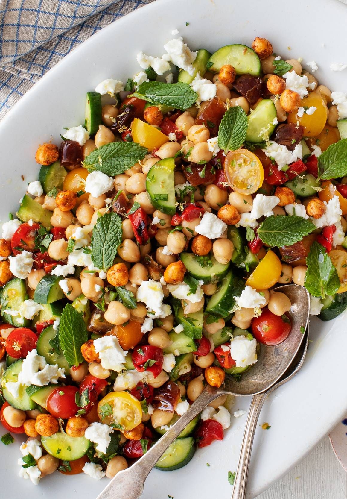

Odin's Chickpea Recipe

Instructions
- In a large bowl, whisk together the olive oil, lemon juice, garlic, mustard, salt, and several grinds of pepper.
- Add the chickpeas, tomatoes, cucumber, pickled onions, and olives and toss to coat. Add the parsley, dill, and mint and toss again.
- Season to taste, garnish with fresh mint leaves, and serve.